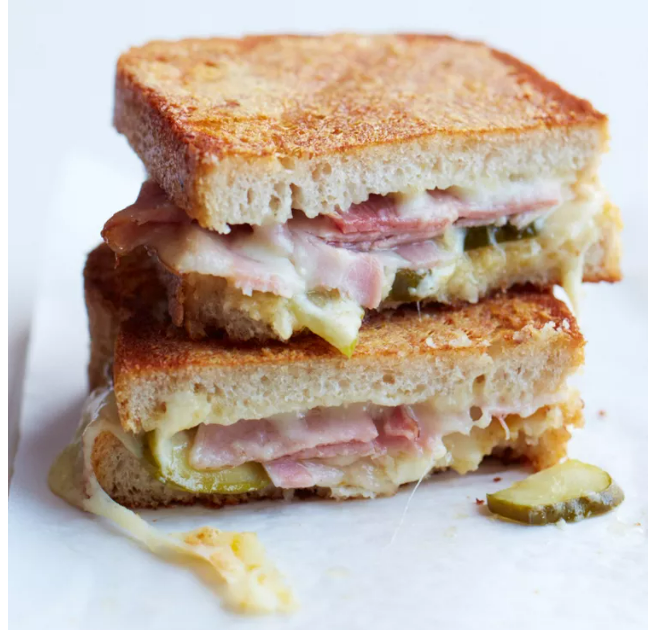

Ham and Cheese Grilled Sandwich

The best way to improve on a great grilled cheese is to sprinkle
some cheese on the outside of the bread. It creates a super-crisp, cheesy crust.
Ingredient List:
- 4 tablespoon of butter
- 8 slices of bread
- 1/2 cup of Parmigano Cheese
- 1/2 pound of sliced cheese
- 8 ouncles of thinly sliced ham
- Pickle slices
- 2 table spoon of Dijon Mustard
- 1/4 Cup of Apricot Reserves
Directions:
- Butter each slices and prinkle with Parmigano
- Invert the slices onto a work surface with cheese side down
- Top 4 of the slices with Swiss Cheese, ham and pickles
- Mix the mustard and spread the remaining 4 slices of bread
- Grill sandwiches over moderate heat until golden crisp on the outside
For more information, click
here
Return